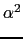

Calculer
où on tape :
normal(1/rootof([1,0],[1,0,10,0,1]))
car P(x) = x est représenté par [1,0].
On obtient :
rootof([[-1,0,-10,0],[1,0,10,0,1]])
ce qui veut dire que :
= - ()3 -10.
Calculer
()2.
On tape :
normal(rootof([1,0],[1,0,10,0,1])^2)
car P(x) = x est représenté par [1,0], et pour avoir , on
élève =rootof([1,0],[1,0,10,0,1]) au carré.
On obtient :
-5-2*sqrt(6)
or :
normal(rootof([1,0,0],[1,0,10,0,1])^2)
car P(x) = x2 est représenté par [1,0,0], pour avoir
directement.
On obtient :
-5-2*sqrt(6)